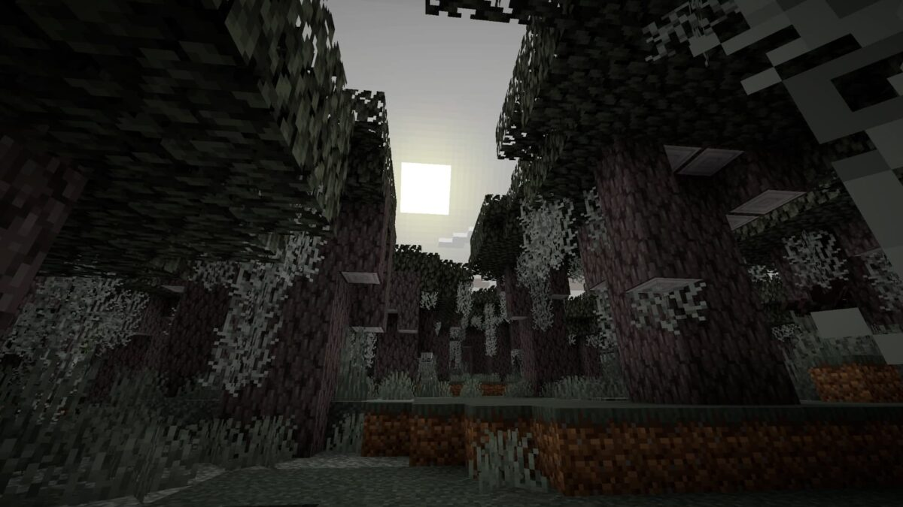
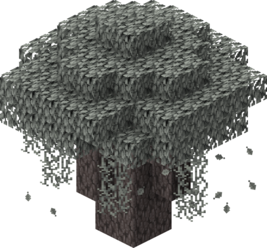

Génération du monde
Le Jardin pâle
Le Jardin pâle (Pale Garden) est une variation sombre et mystérieuse du dark forest biome, caractérisée par une végétation aux teintes grisâtres. L'ambiance unique de ce biome se manifeste à travers un ciel embrumé, des eaux d'un bleu pâle, et un silence pesant qui remplace la musique habituelle. L'environnement est caractérisé par la présence de blocs de mousse pâle et de particules en suspension dans l'air.
Chênes pâles
Les chênes pâles sont les arbres caractéristiques du Jardin pâle. Dans leur état naturel, ils sont ornés de mousse suspendue et de coeurs de grinceur. Bien qu'il soit possible de les cultiver ailleurs, ces versions ne reproduisent pas les décorations spécifiques au biome.
 Le Creaking
Le Creaking